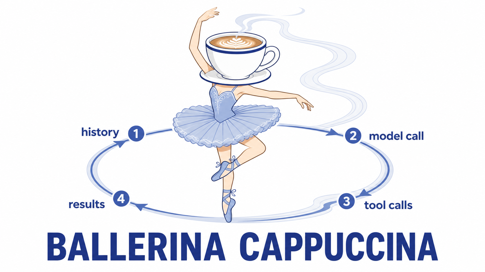

Agentic loop

We’re going to build an entire agent now, in under a hundred lines of python. The heart of the kit is agent_loop in agent.py: the agentic tool loop, task-agnostic by design. We’ll build it once here, test it interactively, and then use it as the basis of the the dispatcher tomorrow. (Ignore the other files in the starter for now, we’ll work on them tomorrow.)
---
config:
layout: elk
---
flowchart LR
u["user turn"] --> m["message history"]
m --> llm["model call"]
llm -- "no tool_calls" --> y["yield: final message"]
llm -- "tool_calls" --> t["run each tool"]
t -- "one result per tool_call_id" --> m
Four invariants the loop must hold:
- Feed the assistant turn back verbatim - content including the
<think>block,tool_callsunchanged. Anything you rewrite breaks the provider’s implicit prompt cache, andcached_tokensstays at zero. - Exactly one
role: "tool"message pertool_call_id. The API rejects a mismatched transcript. - Rounds are bounded (
max_rounds), to prevent runaway token burn. - The loop never calls
next_tick(), that is the responsibility of the outer runner.
Activity: One LLM call
Spoiler: stuck on phase 1?
We’re going to begin without any tools or loop. We will send the system prompt and the task to the model and return the output, including the <think> block, as the final message.
Implement that much of agent_loop in agent.py. Note that the docstring contract describes the finished loop, which strips the think block on yield - for this phase, return the content unstripped. One pyright friction you will hit, expected and not a mistake on your part: message.content is typed str | None, so read it as message.content or "".
Then check it against the scripted model:
uv run behave features/agent_loop.feature -n LOOP-1
Once it works, run the same loop interactively against the real model with a question that needs no tools:
uv run hadr-agent "in one sentence, why is the sky blue?"
The answer arrives wrapped in a <think>...</think> block - that is expected, and worth reading. Read the output: the <think> reasoning, the yielded answer, and rounds: 1.
The <think> tags
Most models you use, including minimax-m3, are reasoning models. They are trained to emit a chain-of-thought before the answer. This measurably improves multi-step decisions at the cost of more tokens, spent in the <think>...</think> block. Read it to see how the model decided, not just what it concluded.
Phase 1 returns it as-is, so you can see it. Later phases strip it for display with strip_think, but still feed the assistant turn back into the history verbatim - <think> block included - so the provider’s implicit prompt cache keeps hitting (invariant 1).
When you’re done
- Open a pull request and have a teammate review it. This is the smallest diff you will ship all course, so use it to prove the review flow actually works: branch protection stops you merging your own,
@claudeleaves a review, and a teammate approves before it lands. Fix the plumbing now, not tomorrow afternoon. - Post the strangest
<think>block you got to the Padlet. A one-sentence question about the sky can produce a startling amount of deliberation, and the shape of that reasoning is what you will be budgeting for in the next session.
Activity: The agentic loop
Spoiler: stuck on phase 2?
Now we add the loop and the tool_calls.
- Run inference in a loop, terminating when the model stops asking for tools (it yields) or
max_roundsis hit.
Now the tool_calls branch: run each tool the model asked for, append exactly one role: "tool" result per tool_call_id, feed the assistant turn back verbatim, and go round again until the model stops asking - bounded by max_rounds. That is invariants 1-3, and LOOP-2 through LOOP-5 check them. One more expected pyright friction: message.tool_calls is a union type and only function calls carry .function, so narrow with tc.type == "function" before touching it:
uv run behave features/agent_loop.feature
Hint: if your model emits invalid tool-call arguments.
Models occasionally emit tool-call arguments that are not valid JSON. Your loop already handles that, but you need to fix this when sending the broken string back in the assistant turn, otherwise the provider rejects the entire request. Here’s one way to do this:
def _replayable_args(raw: str | None) -> str:
"""Tool-call arguments as the provider will accept them back."""
try:
json.loads(raw or "{}")
except json.JSONDecodeError:
return "{}"
return raw or "{}"
Then use _replayable_args(tc.function.arguments) where you rebuild the assistant turn. Valid JSON passes through untouched, so the cache invariant still holds.
All green? hadr-agent wires the same loop to a set of toy tools - watch it actually think:
uv run hadr-agent "roll two dice and tell me the time"
Then push it harder and read the rounds count and the model’s <think> reasoning as it plans and acts across rounds:
# offloading math to a tool.
uv run hadr-agent "what is 2**31 - 1?"
# chaining fetch then decode across rounds.
uv run hadr-agent "what's the secret message?"
# tools touching the real world.
uv run hadr-agent "what files are in this project and what is it for?"
Watch rounds climb when a task forces tool chaining, and watch the loop yield once the model stops asking for tools. This is the exact machine tomorrow’s dispatcher runs on - only the tools, prompt, and state message change.
When you’re done
- Open a pull request and have a teammate review it against the four invariants, not against the test output:
behavepassing means the scripted client was satisfied, not that you feed the assistant turn back verbatim or bound your rounds. Get it reviewed carefully - the rest of this course hinges on this. - Post your
roundscount forwhat's the secret message?on the Padlet. Same tools, same model, different loops: if someone’s is consistently lower, ask them what their system prompt says.
Activity: Grow the scenarios (Optional)
Spoiler: stuck on phase 3?
Add one LOOP-* scenario of your own for an edge you fear - malformed tool arguments, an unknown tool name, a tool that raises.
Tip: the scripted client in features/steps/agent_loop_steps.py records every request your loop makes - read a failing scenario’s transcript before guessing.
This is, roughly, how Claude Code works
There is no second, cleverer mechanism hiding inside the tools you have been using all day. Claude Code, OpenCode, Cursor, and the rest run exactly what you just built: history in, one model call, tool calls out, one result appended per call, repeat until the model stops asking. The four invariants above are their invariants too.
What separates a hundred-line loop from a shipped product is not a better loop. It is the engineering stacked around it, wringing every bit of performance out of a model you can call yourself - and you have already seen most of these layers:
| Layer | What you built today | What a shipped harness adds |
|---|---|---|
| Tools | A handful of toy tools | Dozens of typed tools (edit, shell, search, web), plus any MCP server you attach, each behind a permission prompt |
| Context | One system prompt | CLAUDE.md, memory, /context and /compact, and subagents that do the reading in their own window so yours stays lean |
| Caching | Feeding the assistant turn back verbatim | A prompt deliberately ordered so the prefix is byte-identical on every call - the difference between $1 and $7 for one session |
| Models | One model for everything | A model per job: a cheap one to search and summarize, an expensive one for the turn that decides something |
| Failure | max_rounds |
Retries, timeouts, truncation of oversized tool results, and sessions you can resume |
| Quality | Your LOOP-* scenarios |
Eval suites re-run on every model and prompt change |
That is the good news for tomorrow. You will not out-train a frontier lab, but the loop is a hundred lines and everything above it is ordinary engineering - which is exactly where your dispatcher’s casualty count is won or lost.
If you want to go deeper:
- Effective context engineering for AI agents - curating what goes in the window, and why more context is not better context.
- Writing effective tools for AI agents - tool descriptions and return values as a contract you design, not an afterthought.
- Effective harnesses for long-running agents - what breaks when the loop runs for hours instead of rounds.
- 12-factor agents - a non-Anthropic take on the same problem: own your prompt, your control flow, and your state.
- OpenCode’s source - a production harness you can read. Find its loop and compare it to yours.